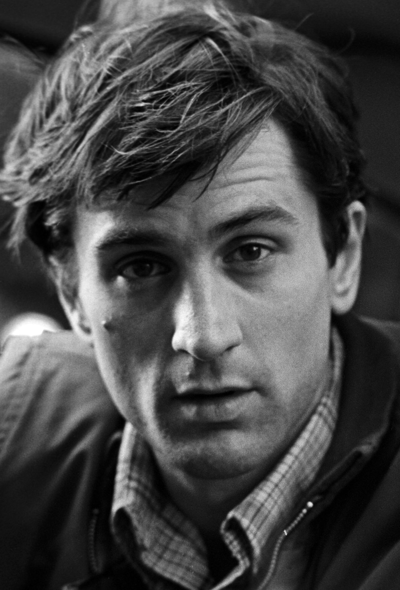
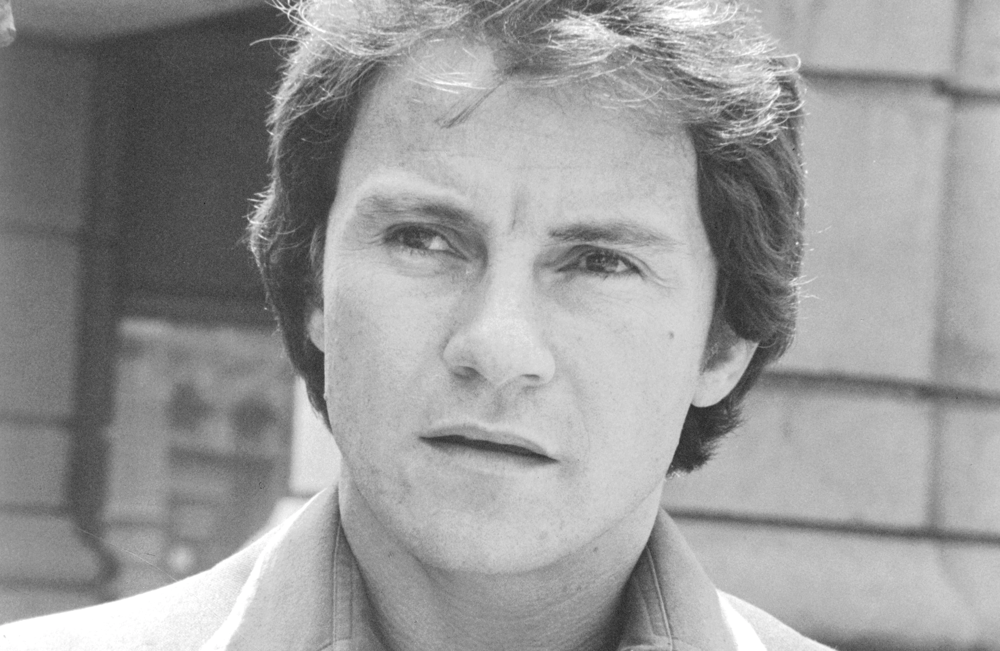
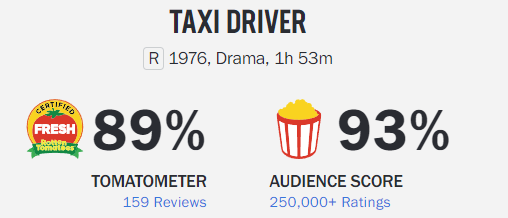
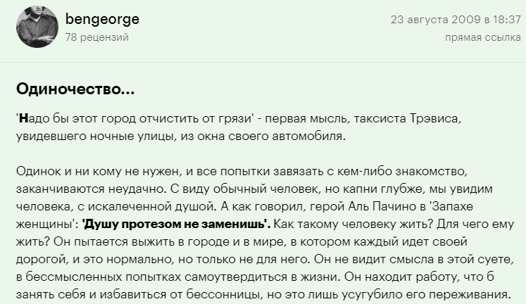
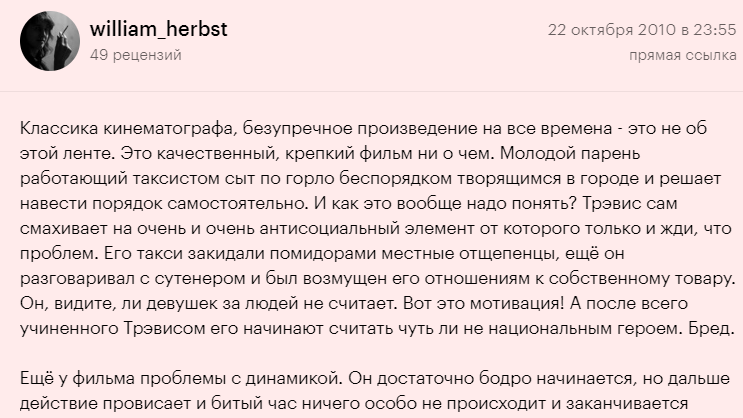

<!DOCTYPE html>
<html>
    <head>
        <link rel="stylesheet" href="style.css">
    </head>
</html>
<header class="header">
    <nav>
        <ul class="films">
            <li class="films__item"><a class="films__item-link" href="film1.html" target="_self">Хороший, плохой, злой</a></li>
            <li class="films__item"><a class="films__item-link" href="film2.html" target="_self">Бойцовский клуб</a></li>
            <li class="films__item"><a class="films__item-link" href="film3.html" target="_self">Таксист</a></li>
            <li class="films__item"><a class="films__item-link" href="film4.html" target="_self">Криминальное чтиво</a></li>
        </ul>
    </nav>
</header>
<main class="main">
    <section class="film">
        <h3 class="heading">О фильме</h3>
        <div class="film__container">
            
            <div class="film__text-container">
                <h2 class="film__name">Таксист</h2>
                <p class="film__description">
                    Тусклый свет слепых фонарей, скелеты фабричных труб, задыхающихся в собственном дыму. 
                    Вавилонские башни небоскребов, все это — ад Нового времени, Нью-Йорк. 
                    Ветеран вьетнамской войны Трэвис Бикл ведет свое одинокое такси по ночным улицам бесконечного города, 
                    и перед ним разворачивается мрачная панорама человеческих грехов. Как ветхозаветный пророк, он надеется, 
                    что однажды небеса пошлют на землю спасительный дождь, который очистит Нью-Йорк от вековой грязи. 
                    А когда умирает надежда, остается только ненависть. Огненный ливень обрушится на головы грешников. 
                    Таксист позаботится об этом.
                </p>
            </div>
        </div>
    </section>
    <section class="actors">
        <h3 class="heading">Актёрский состав</h3>
        <ul class="film__actors">
            <li class="actor"><p class="actor__name">Роберт Де Ниро</p></li>
            <li class="actor"><p class="actor__name">Сибилл Шепард</p></li>
            <li class="actor"><p class="actor__name">Харви Кейтель</p></li>
        </ul>
    </section>
    <section class="information">
        <h3 class="heading">Информация о фильме</h3>
        <table class="film__information" border="0" cellspacing="12px">
            <tr>
                <td>Год выпуска</td>
                <td>1976</td>
            </tr>
            <tr>
                <td>Страна</td>
                <td>США</td>
            </tr>
            <tr>
                <td>Режиссер</td>
                <td>Мартин Скорсезе</td>
            </tr>
            <tr>
                <td>Сценарий</td>
                <td>Пол Шредер</td>
            </tr>
            <tr>
                <td>Премьера в мире</td>
                <td>8 февраля 1976</td>
            </tr>
        </table>
        <h3 class="heading">Рейтинг и отзывы</h3>
        
        <div class="review__container">
            
            
        </div>
        
    </section>
    <section class="trailer">
        <h3 class="heading">Трейлер</h3>
        <div class="trailer__container">
            <iframe width="560" height="315" src="https://yandex.ru/video/preview/8970016805870778522?text=таксист%201976%20трейлер&path=yandex_search&parent-reqid=1711109984642935-16781265081578262631-balancer-l7leveler-kubr-yp-sas-90-BAL&from_type=vast" title="YouTube video player" frameborder="0" allow="accelerometer; autoplay; clipboard-write; encrypted-media; gyroscope; picture-in-picture; web-share" allowfullscreen></iframe>
        </div>
    </section> 
</main>
